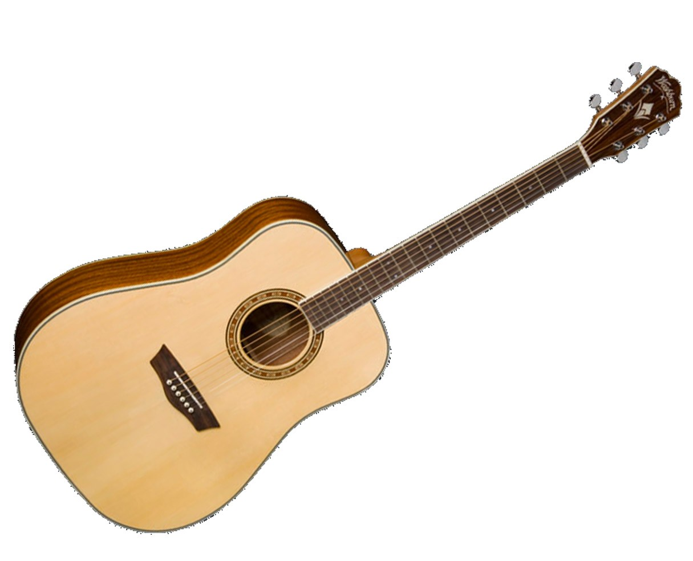

Washburn WD10CEB/BL/R Apprentice series
Apprentice Series guitars are for the serious beginner who wants a guitar that sounds great, plays great and will serve them well as they progress. It features a premium spruce top with mahogany back and sides for a full rich tone and a venetian cutaway, on CE models, which allows for superior upper fret access. The mahogany neck has a beautiful bound rosewood fingerboard that matches the rosewood bridge. A dual action truss rod makes neck adjustments a breeze for easy playing action. High quality die cast tuners make tuning easy and remain stable through the heaviest of strumming. To facilitate the step up to live performance, CE model guitars feature a Fishman Isys+ tuner/preamp which allows the player confidence in spot-on tuning. The built in preamp provides natural acoustic tone and allows for control of volume, bass and treble for dialing in perfect sound.
Washburn WD10CEB Specifications:
o SHAPE: Dreadnought
o TOP: Spruce
o BACK: Mahogany
o SIDES: Mahogany
o BRACING: Quarter sawn scalloped bracing
o ROSETTE: Custom Wood Inlay
o NECK MATERIAL: Mahogany
o FRETBOARD: Rosewood
o INLAYS: Dots
o NUT: Graphtech Nubone
o NUT WIDTH: 43mm
o SCALE: 25.5
o PREAMP SYSTEM: Fishman Isys+
o BRIDGE: Rosewood
o TUNERS: Chrome Diecast
o Colors Available: Black, Blue & Red.